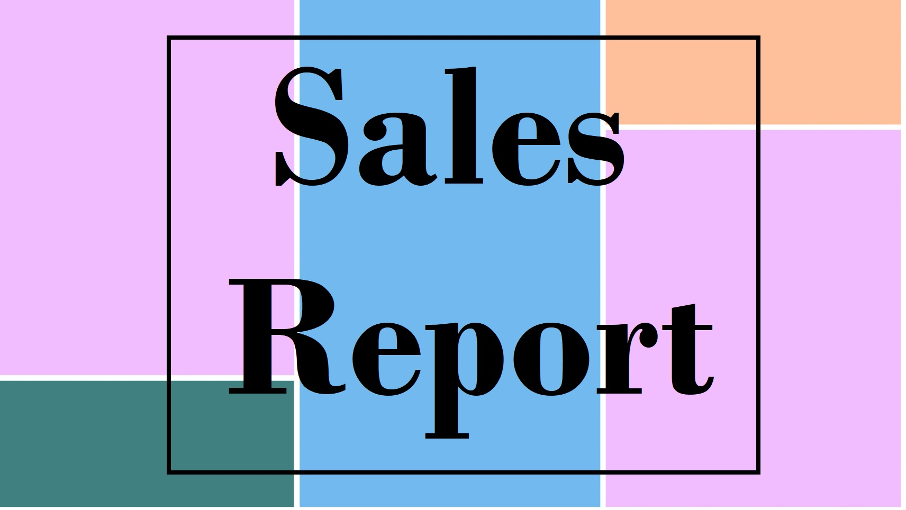

In this project, I analyzed sales data from XYZ Company's supermarket branches. I loaded the datasets, explored them, and worked with date-time features.
I examined unique values, performed data aggregation using GroupBy, and created visualizations.
The project aimed to uncover sales trends and customer satisfaction and visualizations showcased popular payment methods and product categories across all branches, offering valuable insights for the company's growth.
Insight into the sales dataset of two retail chains based in Australia ( Bellings and Ready Wear). Dataset is between January 2016 to July 2017. The financial year runs from July to June. this report is an example how the raw data coming from a transactional system can be leveraged to create a beautiful interactive report that allows to get quick insights into company sales, understand sales fact relationships and come up with smarter business decisions in the end.
The objective of this analysis is to discover various factors contributing to increased customer churn rate at a telecom company, and provide the business users with these insights which they can use to make informed decisions and strategize on how to improve customer retention and reduce churn rate.
With this dashboard, we can track the school’s teachers and students details by noting the total number of students and faculty, along with attendance percentages.The “Mode of Transits” chart displays the number of students who depend on the bus to get to school versus the number of students who use private vehicles. This data can help the school ensure they are able to meet students’ transportation needs.
The focus of this Dashboard is to check if any new users are using the Snowflake (registration is controlled etc), Monitor failed logins(is anyone trying to login to the system who shouldn’t be) and find out user related errors (Do any users need assistance in queries).

Analysis of sales reports of an organization for different products over the three years, and it presents through visualization. You can view that report at the following link.